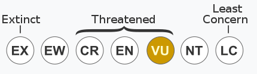
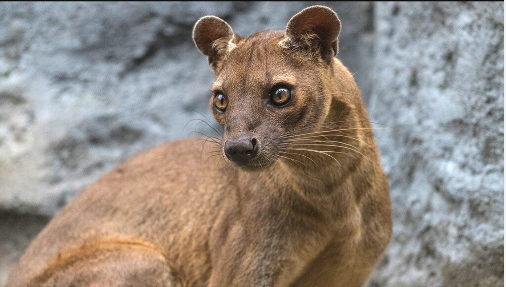

The Foosa evolved many features similar to cats although much bigger. An average adult is 70 to 80 cm long and they have an average weight of 5.5kg to 8.6 kg. The males tend to be larger than the females.
Foosa can extend their claws fully but not retract them fully so they have semi-retractable claws. They also have very flexible ankles that allow them to jump up and down trees head first, helping with jumping from tree to tree.
The Foosa is threatened as shown here  and this is how they look like . The Foosa only lives in Madagascar. Foosa eats day and night and over 50% of their diet is Lemur. The other 50% is lizards and various types of rodents and birds. The Foosa are the predators there are no predators that prey on Foosa. Foosas are animals that only walk alone and only come to another Foosa to mate.